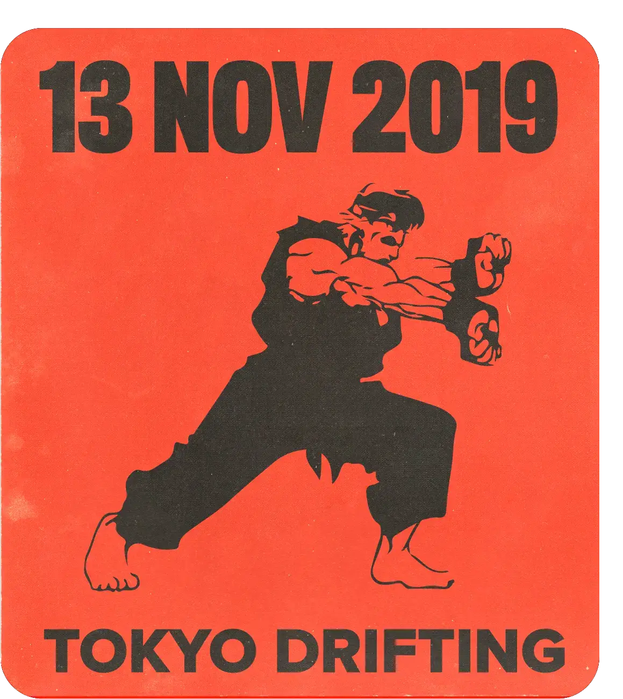

Glass Animals es una banda inglesa de indie rock originaria de Oxford. Su música ha sido aclamada por la crítica y su canción “Heat Waves” se convirtió en un éxito internacional. Además, superó los mil millones de reproducciones en Spotify y llegó al número uno en el Billboard Hot 100 de Estados Unidos y al número cinco en la lista de sencillos del Reino Unido.
